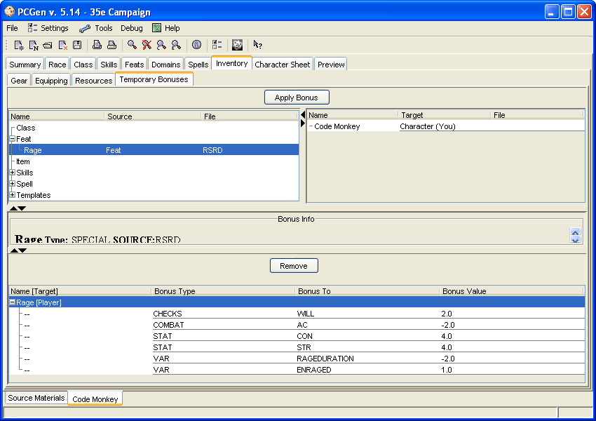

The Temporary Bonus Sub-Tab can be used to apply conditional bonuses to your character such as Spell effects, bonuses due to Rage, having a familiar within 5 feet of your character and more. Normally PCGen will only apply absolute bonuses to your character, for example if you you equip your character with a Belt of Giant Strength he gets a bonus to his strength score because wearing the belt is the only condition that needs to be met. If however your character is of a class that gets a +2 to Hide but only when he’s in a forest environment then PCGen will not apply the bonus to the Skill on the character sheet although there may be an entry in Special Abilities noting this bonus. This is where the Temporary Bonus Sub-Tab comes into play, these conditional bonuses can be applied and removed from characters as needed and the bonuses will then show up on the character sheets. You could then for example apply the rage bonuses and print out a second character sheet with these bonuses applied saving you the time of manually adding these in.
The panel on the top left displays all the conditional bonuses available to the character. To apply one of these select the bonus and then select the target of the bonus from the panel on the right. Depending on the type of bonus the target will either be your character or a weapon he or she is equipped with. Press the Apply Bonus button and it will appear in the bottom panel which lists details of the bonus. Once you check the box labeled Use Temporary Bonuses they will be applied to your character and appear on the output sheet.
One caveat. Up till the implementation of this tab the only way to apply temporary bonuses was through templates created for this purpose. LST file creators generally ignore conditional bonuses, note them in an SA entry and/or make templates for them. At this time there are only a few experimental Temporary Bonus tags in the LST files. Expect to see more as they are added in.
A conditional bonus can be added to a Feat, Spell, Item, Class or Template by appending the BONUS statement with a PREAPPLY statement. Any bonus with a PREAPPLY tag on it will show up in (and only in) the Temporary Bonus Sub-Tab. See the entry on PREAPPLY for details on how to use this tag. Also see the tag TEMPDESC which provides a description of the bonus and the circumstances needed for it to be valid.
An example of what is required to get this tab to work is:
The Rapid Shot feat in srdfeats.lst would be modified to:
BONUS:WEAPON|TOHIT|-2|PREAPPLY:Weapon,Ranged
BONUS:WEAPON|ATTACKS|1|PREAPPLY:Weapon,Ranged
Rapid Shot would then appear in this tab as an available option.
A BONUS in a Spell, Feat or Template with a PREAPPLY:ANYPC tag will always show up in the Spell, Feat or Template lists of the Temporary Bonus Sub-Tab. This accounts for spells that can be cast on a character and Feats and Templates that can be used to hold a conditional bonus any character can apply without having the Feat or Template. This allows for several things:
1) You can apply bonuses from spells 'cast on' your character
2) You can create templates or feats that do not have to be obtained, but your character can still gain the bonuses.
You can use #2 as a Hidden feat or template that is used to "store" the bonuses for something else. Here is an example template:
Alter Self (Troglodyte)
REMOVABLE:YES VISIBLE:NO
BONUS:COMBAT|AC|6|TYPE=NaturalArmor|PREAPPLY:ANYPC
TEMPDESC:Alter Self spell applied to a Medium sized creature to transform into a Troglodyte
You do not have to apply this template to a PC, I can just add it as a Bonus on the Temporary Bonus Sub-Tab.
Some Spells, like Bull's Strength for example, provide a variable bonus based on a die roll (1d4+1). These spells can be coded to accept user input by adding a choose tag. Take Bull's Strength as an example.
The Bull's Strength spell in srdspells.lst would be modified to:
BONUS:STAT|STR|%CHOICE|PREAPPLY:ANYPC|TYPE=Enhancement
CHOOSE:NUMBER|MIN=2|MAX=5|TITLE=Roll 1d4+1
When Bull's Strength is applied to the character a chooser window will pop up titled 'Roll 1d4+1' which asks for a number between 2 and 5.
Spells that grant bonuses dependent on the spellcasters level can be treated in a similar manner. For this example we will use Greater Magic Weapon, which grants a bonus of +1 for every 3 casterlevels up to 5.
The Greater Magic Weapon spell in srdspells.lst would be modified to:
BONUS:COMBAT|TOHIT,DAMAGE|(((%CHOICE/3).TRUNC)MAX1)MIN5|PREAPPLY:Weapon|TYPE=Enhancement
CHOOSE:NUMBER|MIN=3|MAX=20|TITLE=Choose Spell Caster Level
When Greater Magic Weapon is applied to a character's weapon a chooser window will pop up titled 'Choose Spell Caster Level' which asks for a number between 3 (the minimum casterlevel) and 20. The bonus is calculated based on the casterlevel and applied to the weapon.
Feats and Templates can be treated in the same manner. Here is an example feat:
Variable Spell Resistance
VISIBLE:No
TYPE:TemporaryBonus
BONUS:MISC|SR|%CHOICE|PREAPPLY:ANYPC
CHOOSE:NUMBER|MIN=1|MAX=40|TITLE=Choose Spell Resistance
TEMPDESC:Assign Spell Resistance to a character
The PC does not need to select this feat, you simply apply the bonus to the PC on the Temporary Bonus Sub-Tab.